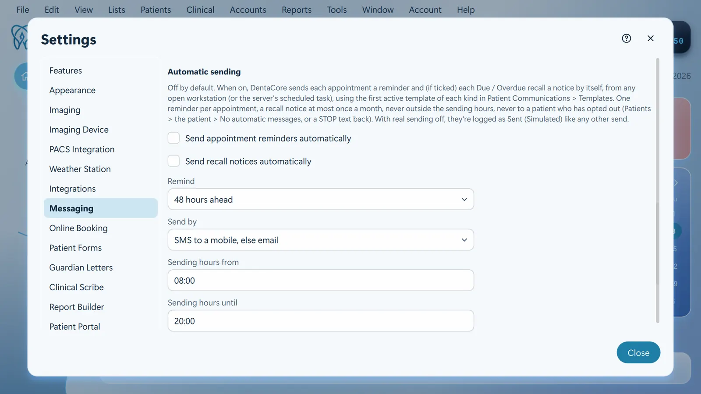
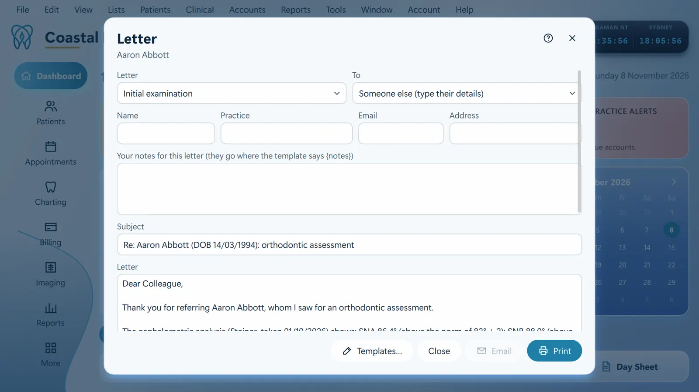

01 / 05 · Families & referrers
Reminders that send themselves
Settings → Messaging → Automatic sending
Adjustment visits are short and frequent, so reminders go out without anyone remembering.
- Reminders 24, 48 or 72 hours ahead, by SMS, email or whichever the patient has.
- Only between the hours you set, and each appointment is reminded once.
- A patient who replies STOP gets no more automatic messages.
- Messages go through your own SMS and email accounts, and each one is logged.

02 / 05 · Families & referrers
Letters to the referring dentist
Ortho Case → Letter
Write to the referring dentist, the patient or a parent from templates, with the case details merged in.
- Templates for the initial examination, treatment progress, treatment complete and thank you for the referral, plus your own.
- Merge fields such as the patient's name, the recipient and the appliance.
- With the Ceph module, tick the traced ceph, measurements, superimposition and simulation to include them.
- Print or email. Every letter is listed with how it went and to whom.

03 / 05 · Families & referrers
A portal for the family
Patients → Patient Portal
Each patient can have a private web page with their upcoming appointments, their plan in plain English, their balance and a box to message the practice.
- Send the link by SMS or email, and revoke it at any time.
- Messages land in Portal Messages for staff to action. Nothing in the record changes on its own.

04 / 05 · Families & referrers
One message to a whole group
Communications → Bulk Send
Tell every patient in retention about a retainer check, or every family about holiday hours, in one go.
- Pick a template and a patient group. DentaCore shows how many it matches and a preview, and asks before sending.
- Each message is logged as sent or failed, with the reason.

05 / 05 · Families & referrers
Every reply in one inbox
Communications → SMS Replies
Texts from patients and parents land in one place instead of a phone nobody's watching.
- Each reply is matched to the patient, newest first.
- The Communication Log keeps every message sent, printable as a PDF.